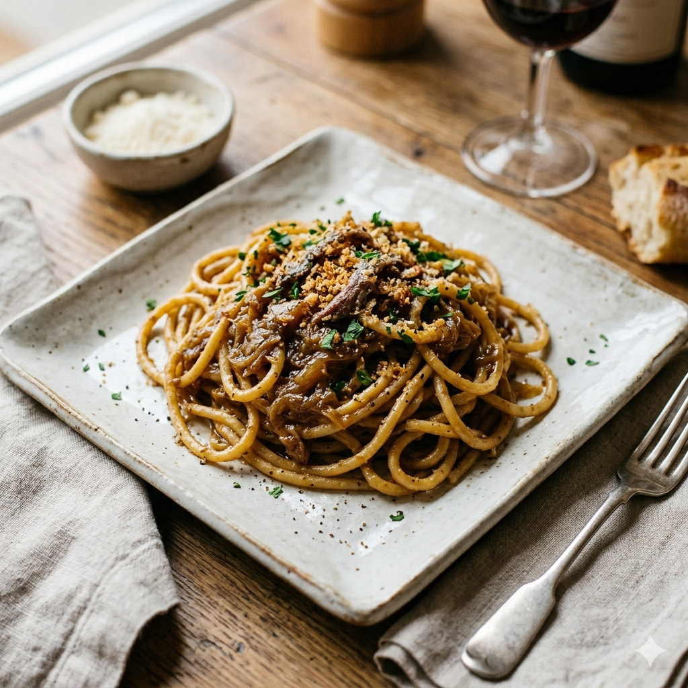

Bigoli in salsa di olio e acciughe

Dosi per 4 persone:
450 g di bigoli;
1 bichiere circa di olio di oliva;
220 g di cipolle;
7 filetti di acciughe dissalate;
2 cucchiai di acqua;
sale e pepe.
tempo preparazione 1 ora, tempo cottura 35 minuti
Ponete in una padella mezza dose di olio e le cipolle affettate molto fini; lasciate imbiondire lentamente unendo infine
due cucchiai di acqua; chiudete il recipiente con il coperchio, abbassate il fuoco e lasciate cuocere al punto giusto.
Fate bollire in una pentola l'acqua poco salata, versatevi i bigoli e fateli cuocere al dente. Tritate intanto molto
sottilmente i filetti di acciuga dissalati e uniteli alle cipolle; lasciate rosolare per pochi minuti, poi spegnete il fornello,
incorporate alla salsa anche il rimanente olio, quindi versate il tutto in una terrina di servizio ben calda nella quale porrete
anche i bigoli scolati. Spolverizzate con un pizzico di pepe, rimescolando con molta cura.